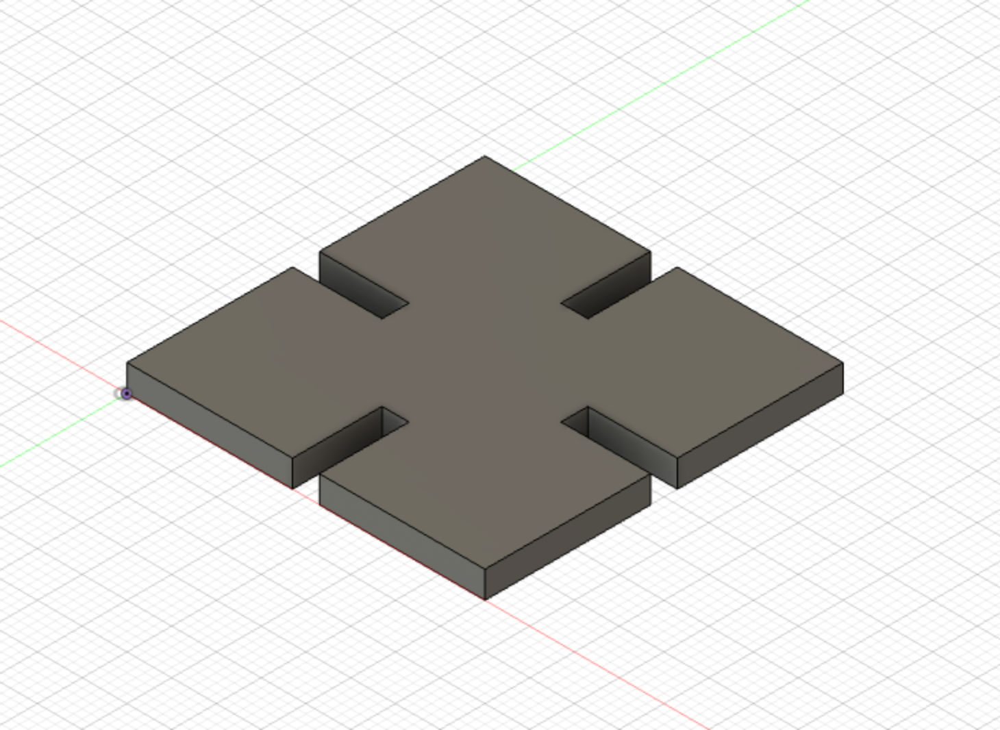
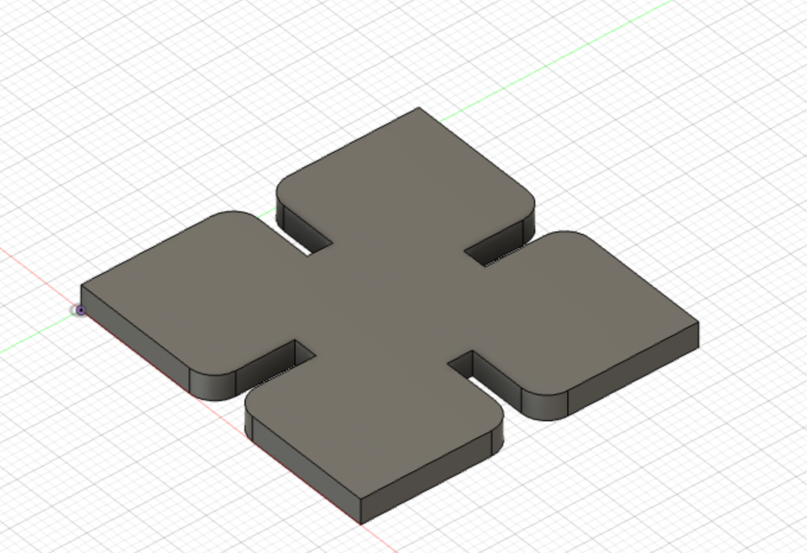
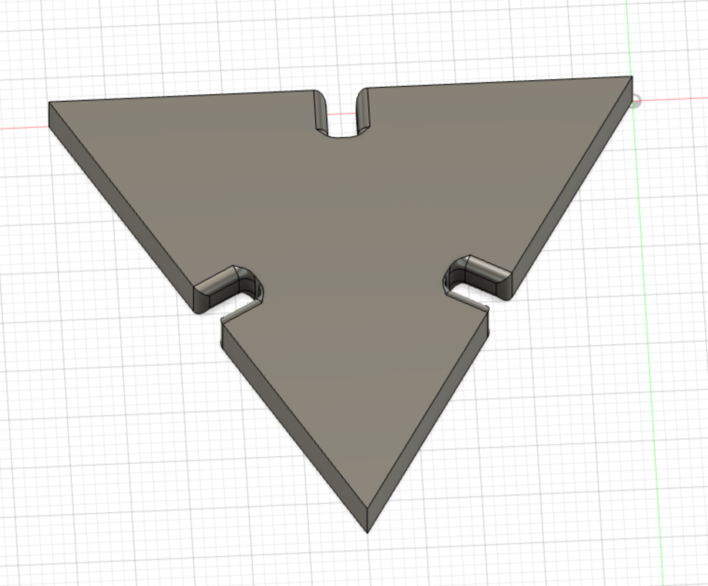
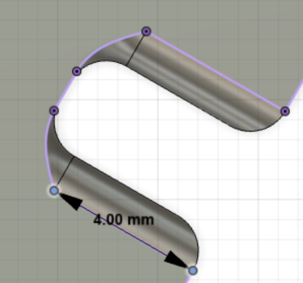
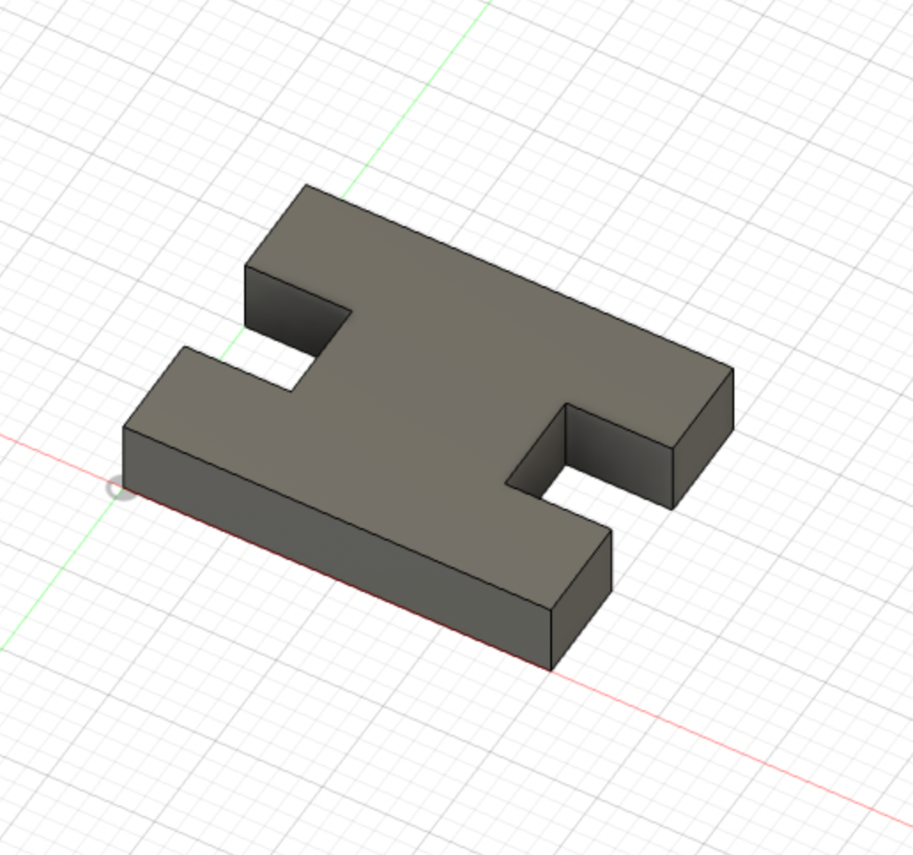
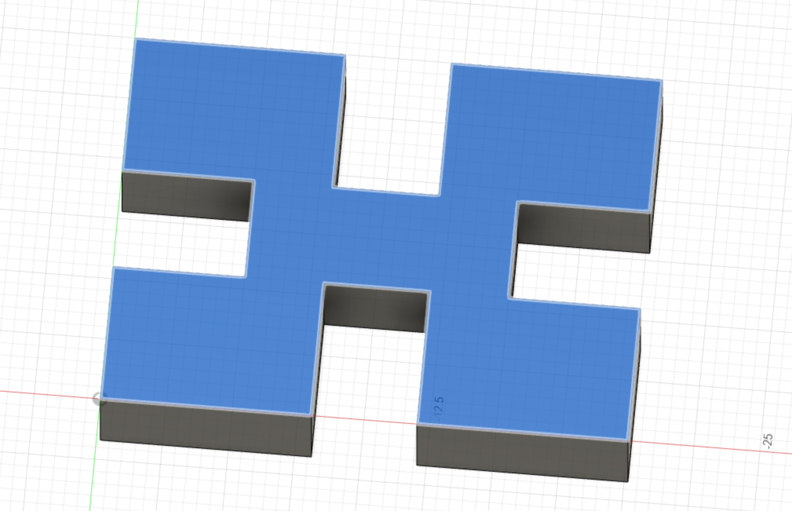
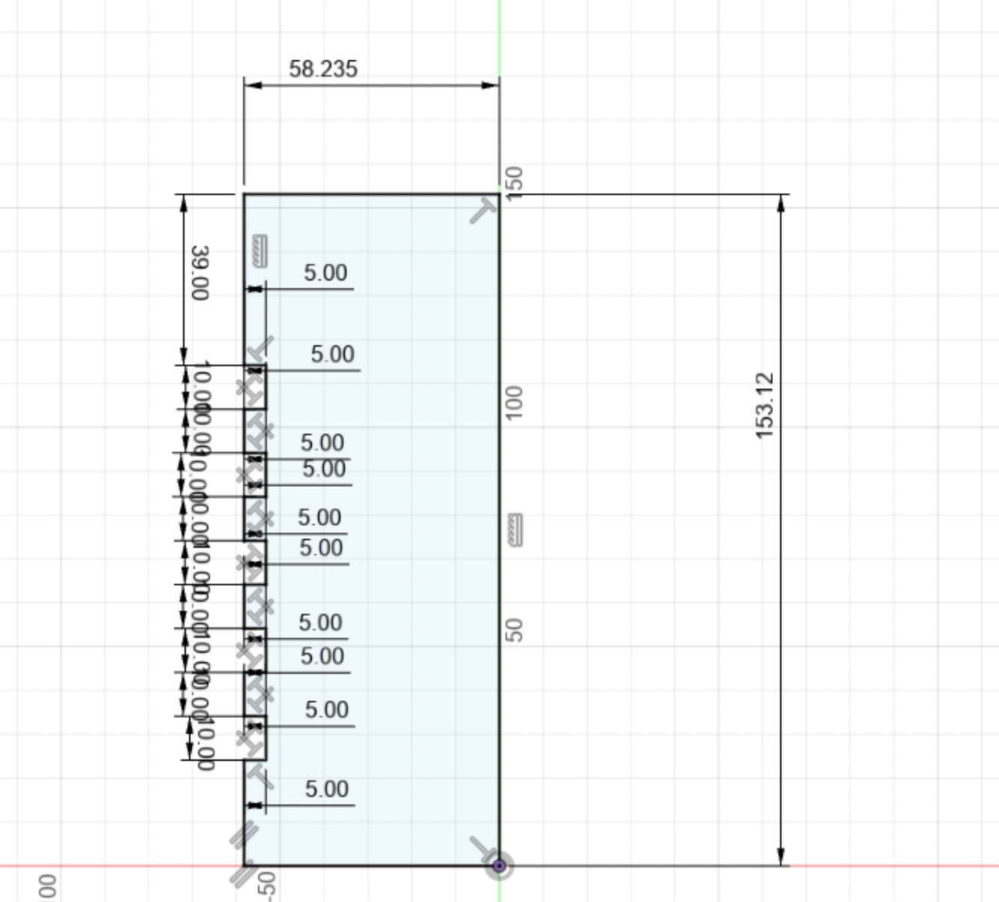
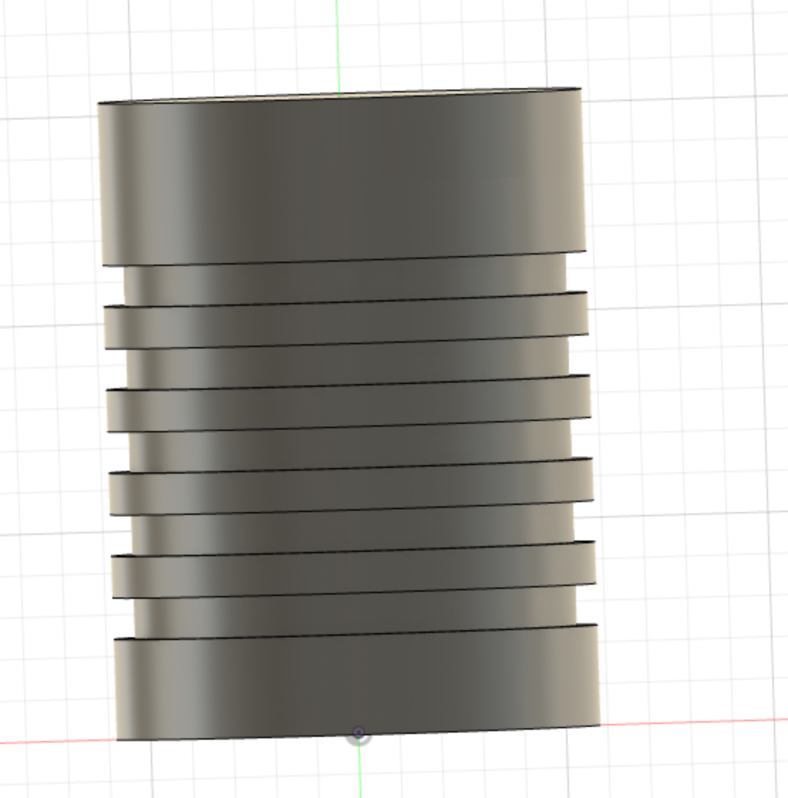

For Week 2, we focused on learning the basics of Fusion 360, building a press-fit construction kit with kerf taken into account, and then modeling household objects or components for our final project. Let's start with the basics.

First, I drew a 40mm x 40mm rectangle in sketch mode and added 3mm central slits on each side, per the PHYS S-12 tutorial.

Next, I included a 3mm fillet on each of the outer corners of the slits, for smoother operation, again per the PHYS S-12 tutorial.
At this point, I ventured into experimenting with my own components. My initial thought was that a pyramid construction would be a good starting point, since it involves square pieces and triangle pieces, plus a connector piece.
Let's start by determining the geometry of the pyramid so that we know the sizes for the press kit pieces. A square pyramid floor keeps things tidy.. We already were looking at a square piece, so we can try four 40mm x 40mm square pieces for the floor.
For this test print, the width of the slits ended up being too large to fit snugly,
so the Fusion 360 file needed to be adjusted. The kerf setting was increased modestly to 0.4mm,
but that didn't make a noticeable difference--clearly there was an issue whereby the laser is going over each cut twice,
significantly increasing the kerf. For now, I increased the kerf setting to 10mm to compensate.
This produced a more usable set of slits.
For the final print, we'll increase kerf further to 1.2mm for snugness.
Now back to the square for V2, with 5mm offset and 1.2mm kerf. We'll give it a 1mm fillet as well for uniformity.
Here are the parameters.
Next, we have to redo the triangle piece to the correct size to match the square, so a 50mm version with identical slits to the square is created below.

Considering the filleting, we're looking at a depth of 5mm, if the connector is filleted too of course.

We will need prongs on each side with a length of 5mm each, plus enough material in between for stability. 2mm should be enough.
>12mm (5mm x2 + margin) width and 7mm (5mm + margin) length, with a 1mm fillet.
Time for a bigger H.

Finally, I decided to make the connector more versatile after determining that the structural integrity would remain sound with four slits. The shape allows for a more flush fit on two of the corners and a firmer fit with a bit more spacing on the other two corners.

20mm length, 15mm width, 3.8mm depth.
4mm wide slits, 5.5mm deep slits on two sides, 5mm slits on two other sides. No fillet this time.
Let's move on to printing and assembly of the above.


Use the connectors to attach the base squares into a larger square.


Attach connectors to the slits to assemble the pyramid.


Here are the Fusion 360 files for the pieces:
Now we have to model household items. I chose my water bottle to start with. First, I took some measurements.


Next, I looked at a tutorial on how to model a water bottle in Fusion 360: https://www.youtube.com/watch?v=s5tRWYkxu9o
One interesting item of note is using the equal command in F360, which will set elements equal to each other if any of the elements change. This is useful for modeling ridges in the water bottle. The same can be done with the horizontal/vertical constraint tool, to keep lines aligned on those axes.
Anyway, let's begin sketching the bottle using the measured dimensions. We'll start with a vertical line from the origin using the length of the bottle (262mm), then use a horizontal line from the
top to create the cap (43.05mm diameter, 30.18mm length). Now we'll create another horizontal line from the bottom of the bottle using the bottle diameter (70.97mm), and create a smooth curve taper
from the bottle to the cap using the spline tool.
We'll also parameterize the dimensions and use the diameters/2 for the radii.
Next, we'll finish the sketch and use the Revolve tool to 3D model it.
Voila, a bottle.
Here's the Fusion 360 file for the bottle:
For a second model, we'll look at a can.

The diameter is 116.47mm and the height is 153.12mm. There are five ridges, starting about 39mm from the top of the can.
We'll sketch out the shape in Fusion 360, with the five symmetrical ridges starting at 39mm from the top created using the line tool. We'll make sure that it's an enclosed shape.
>
Then revolve around the y axis.
>
Fusion 360 file for the can: